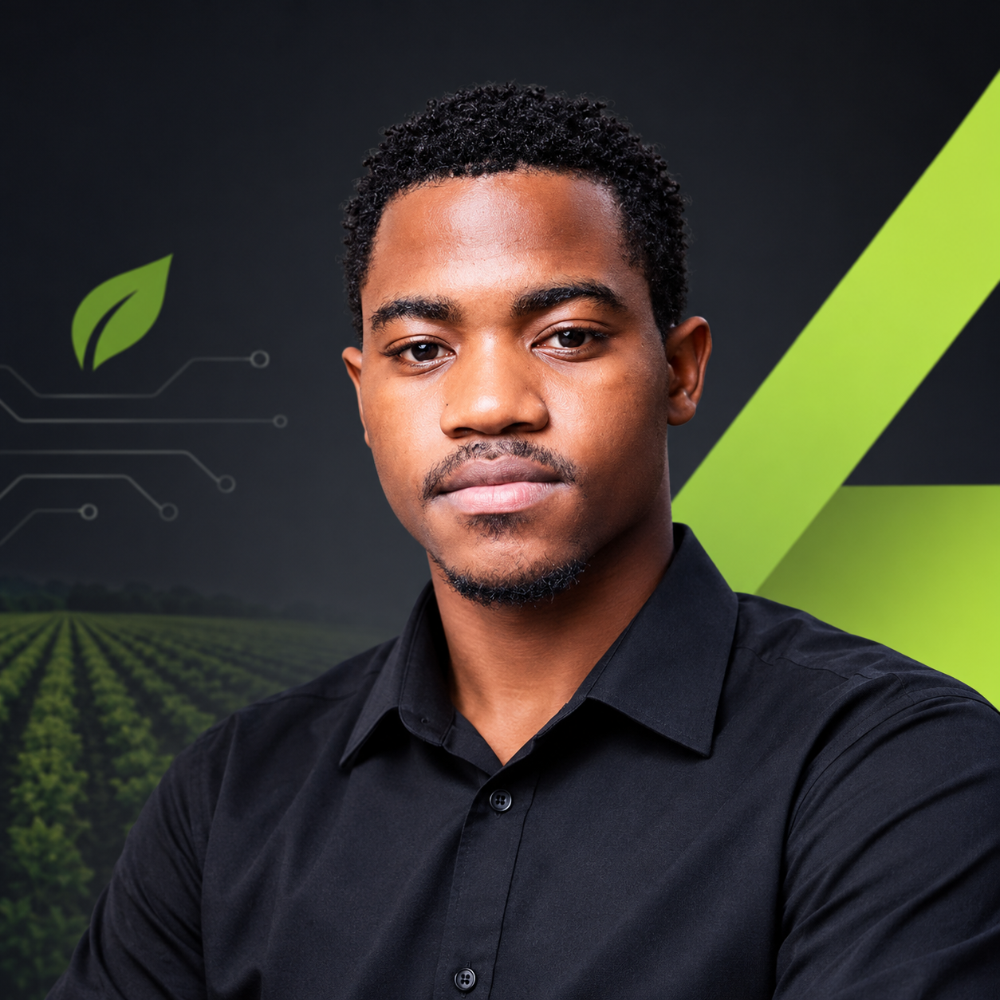

Web Development
Building responsive websites and interfaces with attention to usability, accessibility, clear structure and practical business needs.
WEB DEVELOPER & TECHNICAL WRITER · MALAWI
I’m Wanangwa Mlauzi, a Computer Science student developing practical skills in web development and technical writing. I build responsive digital experiences and explain technical information in ways that help people understand and use technology.
BASED IN MALAWI · OPEN TO INTERNSHIPS, ENTRY-LEVEL ROLES & FREELANCE PROJECTS

WEB DEVELOPMENT · TECHNICAL WRITING · IT SUPPORT
Two complementary focus areas, supported by practical IT knowledge and a commitment to solving real user problems.
Building responsive websites and interfaces with attention to usability, accessibility, clear structure and practical business needs.
Creating documentation, tutorials and explainers that make software, systems and technical processes easier to understand.
Two business websites that demonstrate my developing front-end skills and focus on practical online experiences.
A business website presenting cleaning, catering and event decoration services online, helping potential customers discover the services and enquire through WhatsApp.
A business website presenting car wash services online and making it easier for customers to contact the business, enquire or arrange bookings through WhatsApp.
Web Development and Technical Writing are my primary focus areas, supported by a growing foundation in IT support.
Responsive layouts, HTML, CSS, JavaScript fundamentals, front-end implementation and deployment workflows.
Technical explanations, user-focused documentation, tutorials, structured content and clear instructions.
Computer and software fundamentals, basic troubleshooting, networking knowledge, and practical technical assistance for users.
Tools and knowledge I am actively developing through coursework and practical projects.
ABOUT ME
I am studying Computer Science and developing practical skills in web development and technical writing. I am interested in building useful digital experiences and explaining technology clearly for the people who use it.
I am open to internships, entry-level opportunities and suitable freelance projects as I continue learning and building.
I am interested in software documentation, technical tutorials, step-by-step guides and explaining technical concepts through clear, user-focused writing. The topics below are planned samples, not published articles.
A practical guide to structuring documentation around user tasks, clear language and useful examples.
An accessible explanation of IP addresses, routers, gateways and simple connectivity troubleshooting.
CONTACT
I’m open to internships, entry-level opportunities, freelance website projects and collaborations involving technology and technical communication.
LOCATION · MALAWI
EMAIL · wbmlauzi@gmail.com
LINKEDIN · Wanangwa Mlauzi · [Add verified profile URL before publishing]